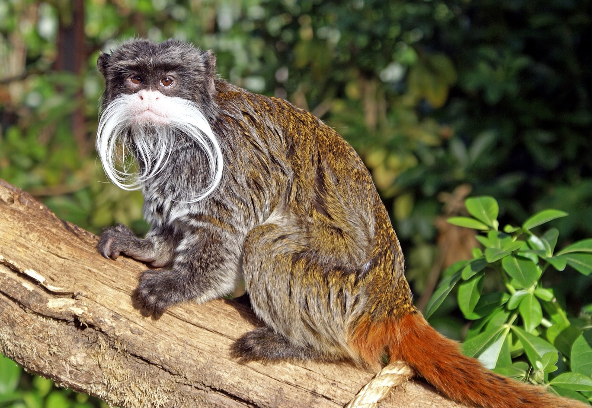
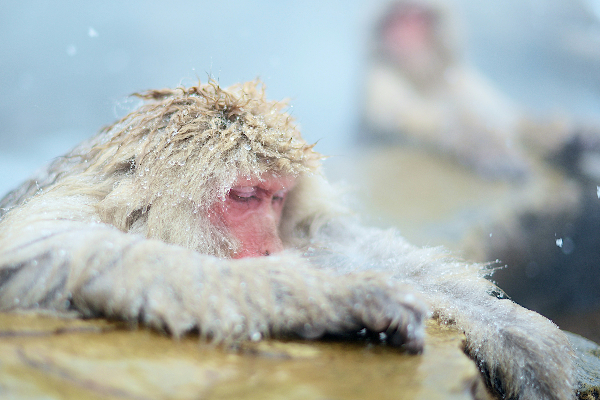

Small and agile, squirrel monkeys have yellowish limbs, a white face, and a curious expression. They move quickly through the treetops of South America in noisy groups.
Native to the Ethiopian Highlands, geladas have thick fur, a red patch on their chest, and are known as "bleeding-heart monkeys." They spend most of their time on the ground, feeding on grass.
With dark gray fur and white circles around their eyes, dusky leaf monkeys look like they’re wearing glasses. Found in Southeast Asia, they love eating young leaves and fruit.
Tiny and distinguished by their long, white mustaches, emperor tamarins are playful primates from the Amazon. Their small size contrasts with their bold personalities.
The world’s smallest monkey, pygmy marmosets, weigh as little as 100 grams. With their fluffy fur and tiny size, they cling to tree trunks in South American rainforests.
Also known as snow monkeys, these macaques live in cold mountain regions of Japan. They have thick fur and are often seen soaking in hot springs to keep warm.